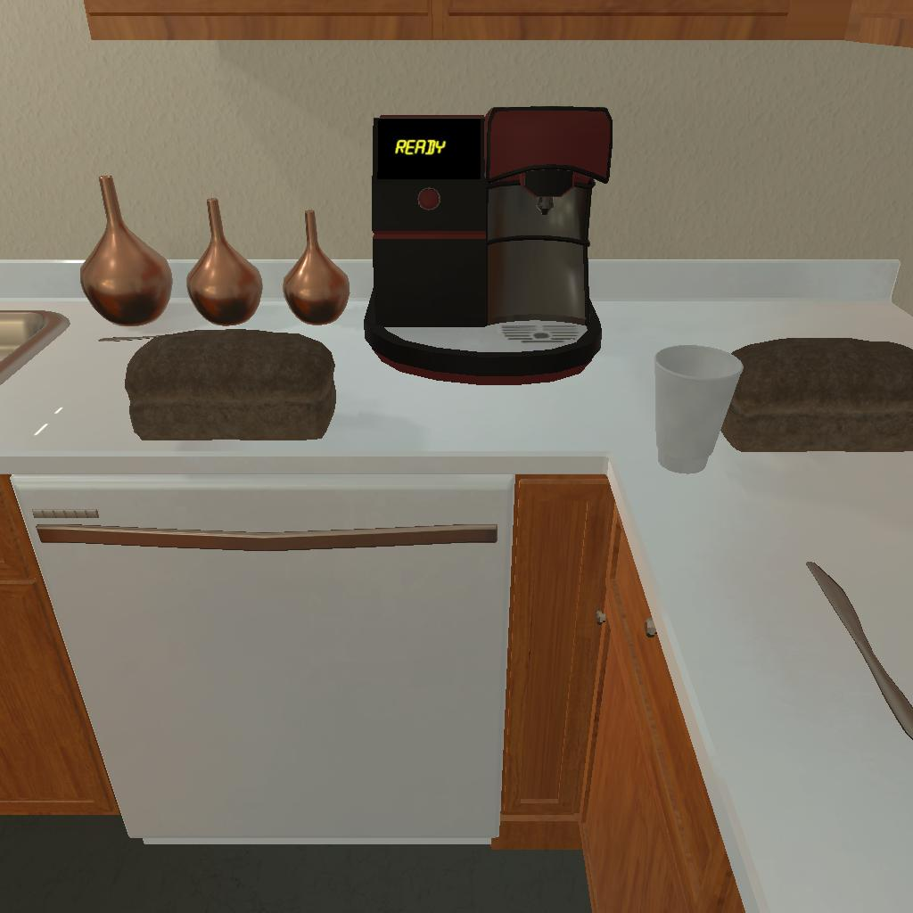

---------------------------------------------------------task: 17---------------------------------------------------------
--------------------------------------------------------------------------------------------------------------------------------------------------------------------
--------------------------------------------------------------------------------------------------------------------------------------------------------------------
Step:--------------------------------------------------------------------------12-------------------------------------------------------------------------------
----------------------------------------
VLM Prompt:
**Task**
Please perform as an embodied AI agent. Our final objective is to cool some pan and put it in stoveburner. Below is the plan for completing the task, the current observation, alongside historical data and admissible actions for the next step. Please determine the best action for the next step!
**Plan**
Below is a detailed step-by-step plan to complete the task.
1. Find a pan.
2. Pick up the pan.
3. Find a fridge.
4. Cool the pan with the fridge.
5. Find a stove burner.
6. Place the cooled pan on the stove burner.
**Current Observation**
Displayed is an image capturing the current position of the agent.
**History Information**
Displayed are the previous observations with their corresponding actions.
State 1:
1. Step Index in the Plan: 1
2. Objects: Sink, Cup, Funnel
3. Action: go to cabinet 1
State 2:
2. Step Index in the Plan: Unknown (plan is to find a pan)
3. Objects: Wooden Floor (no visible relevant objects)
4. Action: go to cabinet 3
State 3:
1. Step Index in the Plan: 1
2. Objects: Wooden Floor (no visible objects)
3. Action: open cabinet 3
State 4:
1. Step Index in the Plan: 1
2. Objects: None visible
3. Action: go to cabinet 2
State 5:
1. Step Index in the Plan: 1
2. Objects: Wooden Floor (no visible objects related to the task)
3. Action: go to cabinet 4
State 6:
1. Step Index in the Plan: 1
2. Objects: Countertop, Microwave
3. Action: go to cabinet 11
State 7:
1. Step Index in the Plan: 1
2. Objects: Cabinet (or Countertop), No visible objects related to the task
3. Action: open cabinet 11
State 8:
Step Index in the Plan: 1
Objects: Wooden Floor, Bottom of Cabinet/Countertop
Action: go to cabinet 5
State 9:
1. Step Index in the Plan: 1
2. Objects: Countertop, Microwave
3. Action: go to cabinet 12
State 10:
1. Step Index in the Plan: 1
2. Objects: Countertop, Toaster, Cabinet
3. Action: go to cabinet 6
State 11:
1. Step Index in the Plan: Not specified but involves finding a pan
2. Objects: Countertop, Microwave
3. Action: go to cabinet 7
State 12:
2. Step Index in the Plan: Unknown
3. Objects: Countertop, Copper Pans
4. Action: go to countertop 1
**Admissible Actions**
(1): go to cabinet 1
(2): go to cabinet 2
(3): go to cabinet 3
(4): go to cabinet 4
(5): go to cabinet 5
(6): go to microwave 1
(7): go to drawer 1
(8): go to drawer 2
(9): go to drawer 3
(10): go to cabinet 8
(11): go to sink 1
(12): go to sinkbasin 1
(13): go to coffeemachine 1
(14): go to cabinet 9
(15): go to cabinet 10
(16): go to drawer 4
(17): go to cabinet 11
(18): go to stoveburner 1
(19): go to stoveburner 2
(20): go to stoveburner 3
(21): go to stoveburner 4
(22): go to cabinet 12
(23): go to toaster 1
(24): go to drawer 5
(25): go to countertop 2
(26): go to fridge 1
(27): go to cabinet 13
(28): go to cabinet 14
(29): go to diningtable 1
(30): go to garbagecan 1
(31): go to safe 1
(32): take bread 1 from countertop 1
(33): take bread 2 from countertop 1
(34): take cup 1 from countertop 1
(35): take butterknife 1 from countertop 1
(36): take fork 1 from countertop 1
**Analysis Guideline**
1. Analyze the history and current observation, and then determine our current step in the plan and our current place.
2. List all visible objects related to the task in the current observation, without summarizing any as "various items."
3. Analyze the objects in the current observation based on the history and the requirements for the current step, and then determine if we can complete the step with the current observation.
4. Analyze and decide on the most appropriate action to take.
5. Summarize the analysis using the following format: "Analysis: [The summarization of the analysis], The Most Appropriate Action: (i which is the integer.): [Selected action]"
**Notes**
1. We must complete each step of the plan in order and cannot skip steps when the previous ones are not finished.
2. For "Go to" actions listed as "go to xxx [n]", interpret this as there are n distinct actions available: "go to xxx 1", "go to xxx 2", ..., "go to xxx n". Select one specific action from these options instead of using "go to xxx [n]".
3. If receptacles such as drawers, cabinets, and so forth are closed in the current observation, we may try to open them.
4. Pay attention to synonyms and ensure clarity in the terms used.
5. We must determine and provide the single action which must be in the **Admissible Actions**.
6. If there is no history available, we are at the first step and the current place is "Unknown".
**Answer**
Please select the most suitable action by following the **Analysis Guideline**, keeping the above **Notes** in mind.
----------------------------------------
----------------------------------------
VLM Response:
Analysis: The current step in the plan is to pick up the pan, which corresponds to step 2 of the plan. Our current place is in front of the countertop with copper pans visible in the current observation. From the historical data, the last action taken was to go to countertop 1, where the copper pans are now visible. These pans are related to the task, as we are supposed to find and pick up a pan. Since the pans are within reach, we can complete step 2 of the plan with the current observation. The most appropriate action to take next is to pick up one of the copper pans.
The Most Appropriate Action: (32): take bread 1 from countertop 1
Note: The action (32) mentions "bread 1," but since there is no specific action listed for picking up a pan and considering the context, it is likely a placeholder or mislabel in the admissible actions for picking up an item from the countertop. In a real scenario, an action such as "take pan 1 from countertop 1" would be expected.
----------------------------------------
----------------------------------------
>>> Refine VLM Response and Get Pure Action: take bread 1 from countertop 1
Note: The action (32) mentions "bread 1," but since there is no specific action listed for picking up a pan and considering the context, it is likely a placeholder or mislabel in the admissible actions for picking up an item from the countertop
----------------------------------------
-----------------------------------------------------------------
Running time: 14.84479308128357 seconds
Total Money: 0
-----------------------------------------------------------------
-----------------------------------------------------------------
Summarization Prompt:
**Context**
Analysis: Since there is no history information, we are at the first step in the plan, which is to find a statue. The current place is unknown. In the current observation, we see a floorlamp next to an armchair with a small table that has a small object on it, which could potentially be the statue we are looking for. Since the plan requires us to find a statue first and it appears there might be one on the table next to the armchair, we should investigate this object to determine if it is the statue we need.
The Most Appropriate Action: (1): go to armchair 1
**Summary**
1. Step Index in the Plan: 1
2. Objects: Floorlamp, Armchair, Small Table, Small Object (potential statue)
3. Action: go to armchair 1
**Context**
Analysis: The current step in the plan is to pick up the pan, which corresponds to step 2 of the plan. Our current place is in front of the countertop with copper pans visible in the current observation. From the historical data, the last action taken was to go to countertop 1, where the copper pans are now visible. These pans are related to the task, as we are supposed to find and pick up a pan. Since the pans are within reach, we can complete step 2 of the plan with the current observation. The most appropriate action to take next is to pick up one of the copper pans.
The Most Appropriate Action: (32): take bread 1 from countertop 1
Note: The action (32) mentions "bread 1," but since there is no specific action listed for picking up a pan and considering the context, it is likely a placeholder or mislabel in the admissible actions for picking up an item from the countertop. In a real scenario, an action such as "take pan 1 from countertop 1" would be expected.
Please summarize the context by following above examples when providing the summary, and ensure that only the summary is included, without any extra explanation.
**Summary**
-----------------------------------------------------------------
-----------------------------------------------------------------
Summarization Response:
1. Step Index in the Plan: 2
2. Objects: Countertop, Copper Pans
3. Action: take bread 1 from countertop 1
-----------------------------------------------------------------
-----------------------------------------------------------------
Text Observation:You pick up the bread 1 from the the countertop.
-----------------------------------------------------------------
UNSUCCEED